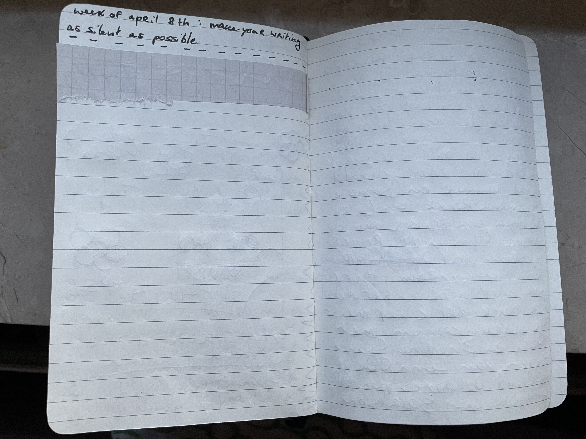

week of 08/04/2024. prompt: try to make your writing as silent as possible. i know it's a weird prompt-- don't take it too seriously. have fun. what does it mean for writing to be quiet?
unleash the thought process
i was ready to write paragraphs or a more theater script kind of thing, but then i thought "haha you know what woudl be funny" and did this. the glued on paper is to hide the few words i had written lmao. also yes i wrote on the other side of the pages for this prompt! nothing very thought through, just how my day went (now i think about it, it's something i enjoy talking about but i usually can't because i'm usually alone at the end of the day or my parents are busy and i can't talk about it with them) and sketches for a project (that, now i also think about it, i have to keep silent because it's for my cousin's birthday and she and her family aren't allowed to know yet!). this was a very fun prompt :)
